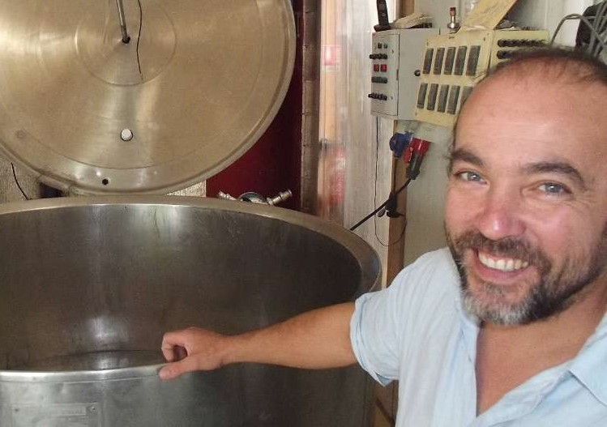

Brasserie Saint-Léon

Nicolas Hebert en plus de fabriquer ses délicieuses bières artisanales, cultive son propre orge sur 8 hectares de terre, c'est ce qui fait aujourd'hui l'originalité de la Brasserie Saint-Léon à Creon. Il fût tout d’abord agriculteur et viticulteur à Saint Léon durant de nombreuses années. C’est en 2002, à partir de ses essais de bière avec un ami et une cocotte-minute dans sa cuisine, qu’il a su que la bière serait son credo. Après de nombreuses tentatives avec sa propre orge, il arriva au résultat escompté. C’est ainsi qu’il décida de faire de sa passion son métier. Pour cela il acheta un terrain à Créon en 2006 sur lequel il bâtit avec tout son cœur sa brasserie
-
coordinateur.rice :
- sonia
- biere
- Site : https://brasserie-saintleon.fr
- Commande : https://cagette.gourmandignes.org/contract/view/16
- contrat(s) :
Brasserie Saint-Léon
Notre brasseur Nicolas Hebert
- boisson
- bière
- limonade